<div class="row">
    <div class="span12">
      <small class="work-def-sm">Prototype video made with Principle for MacOS app</small>
      <h5 class="work-def">Imagine Git for Food</h5>

      <p class="work-def">
      FORK is a collaborative recipe system inspired by Git version control, where users create personal recipes and make them freely available for others to develop their own versions, improving or completely transforming them. </p>
      
      <p class= "advice">For the complete context and final outcome, please download the full case study PDF attached above.</p>

      <h5 class="work-def">Create a Fork</h5>

      <p class="work-def">
      Create your personal copy of any community recipe. This generates an independent version that connects your culinary creativity to the original dish while maintaining full creative freedom.</p>

      <h5 class="work-def">Make Changes</h5>
      
      <p class="work-def">Experiment and improve recipes without affecting the original. Add ingredients, modify techniques, or completely reimagine the dish. This distributed approach allows unlimited culinary innovation while preserving recipe lineage.</p>

      <h5 class="work-def">Submit Pull Request</h5>

      <p class="work-def">Share your culinary improvements back to the community. If your enhanced version adds value, it can be merged into the main recipe, enriching the collective database and inspiring new creative directions.</p>

      <p class="work-def">The platform features an extensive social system with powerful functionalities for creating teams, competing for scores, and organizing culinary competitions. This process allows original ideas to evolve into something completely different, automatically growing the existing database of dishes to be prepared.</p>
   
      <h5 class="work-def ">Main Finalized App screens</h5>

      <div class="">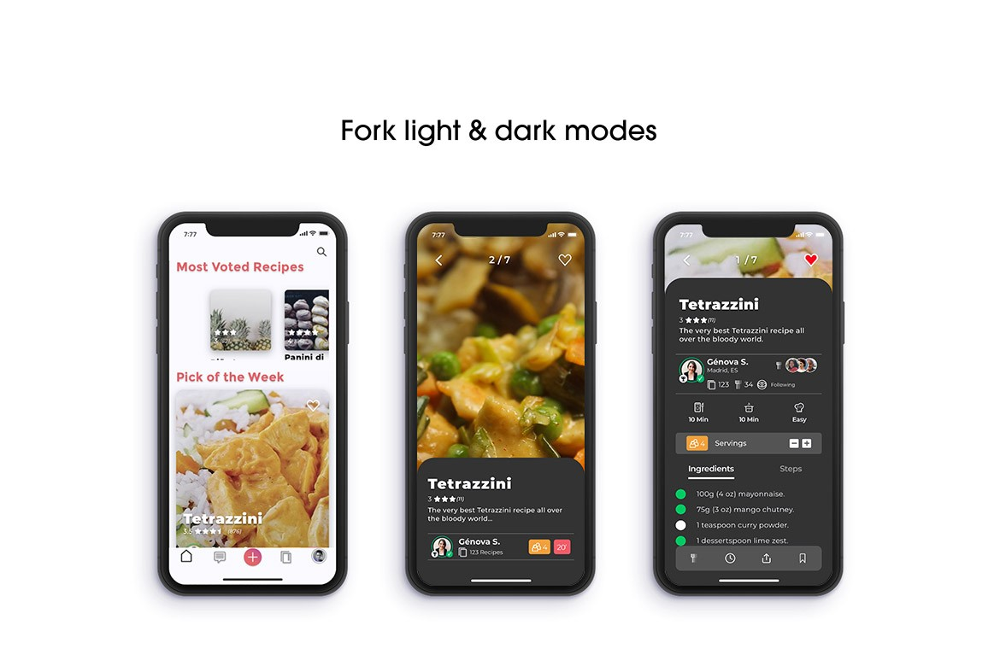</div>

      <h5 class="work-def ">Pen and paper main user flow</h5>
      <div class="">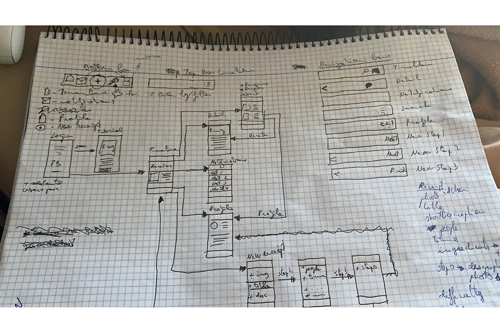</div>

      <h5 class="work-def ">Lean UX user survey data</h5>

      <div class="row">
        <div class="span6">
          
          <div class="">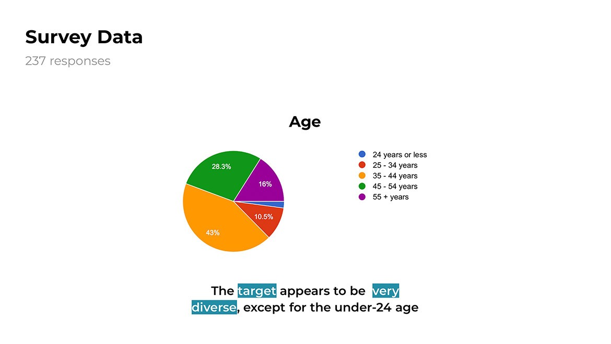</div>
          <small class="work-def-sm">Age of participants</small>  
        </div>
        <div class="span6">
          
          <div class="">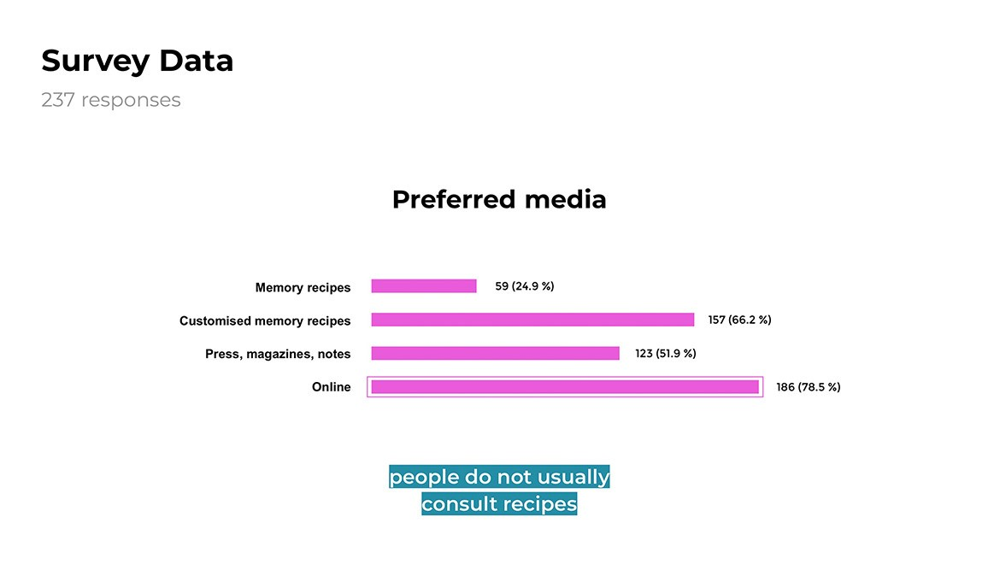</div>
          <small class="work-def-sm">Preferred media</small>
        </div>
      </div>

    <h5 class="work-def">Empathy</h5>
    <div class="row">
      <div class="span6">
        
        <div class="">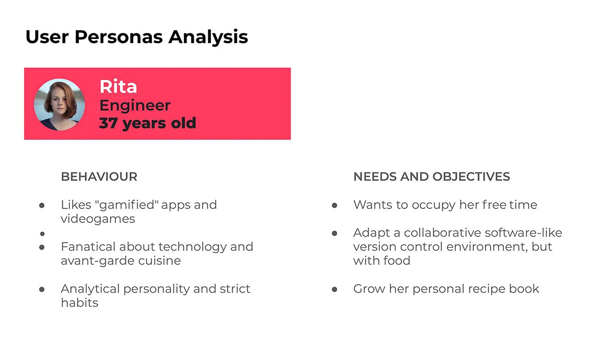</div>
        <small class="work-def-sm">User Personas analysis</small >
      </div>
      <div class="span6">
        
        <div class="">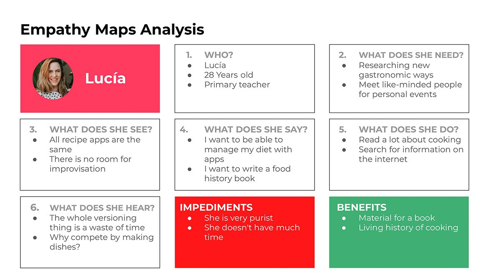</div>
        <small class="work-def-sm">Empathy Maps analysis</small>
      </div>
    </div>
    <h5 class="work-def">Happy path or best User figurelow possible</h5>
    <div class="">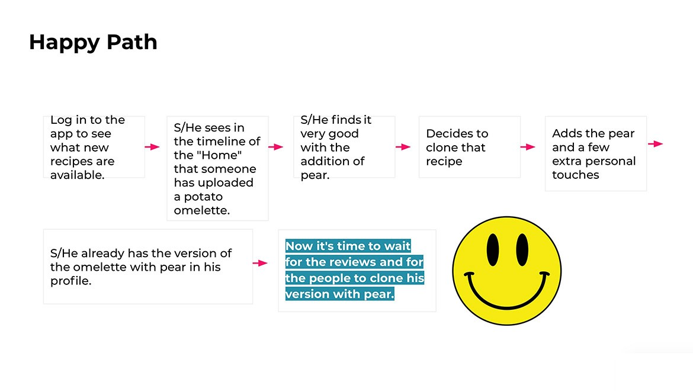</div>

    <h5 class="work-def">The moscow method for prioritising functionalities.</p>
    <div class="">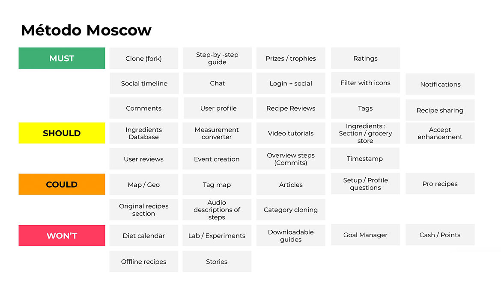</div>

    <h5 class="work-def">Hi-Fi Wireframes</h5>
    <div class="">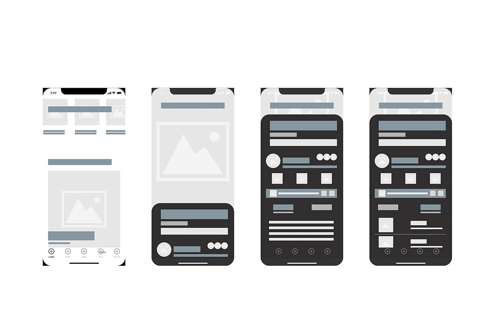</div>

    <h5 class="work-def">Moodboard</h5>
    <div class="">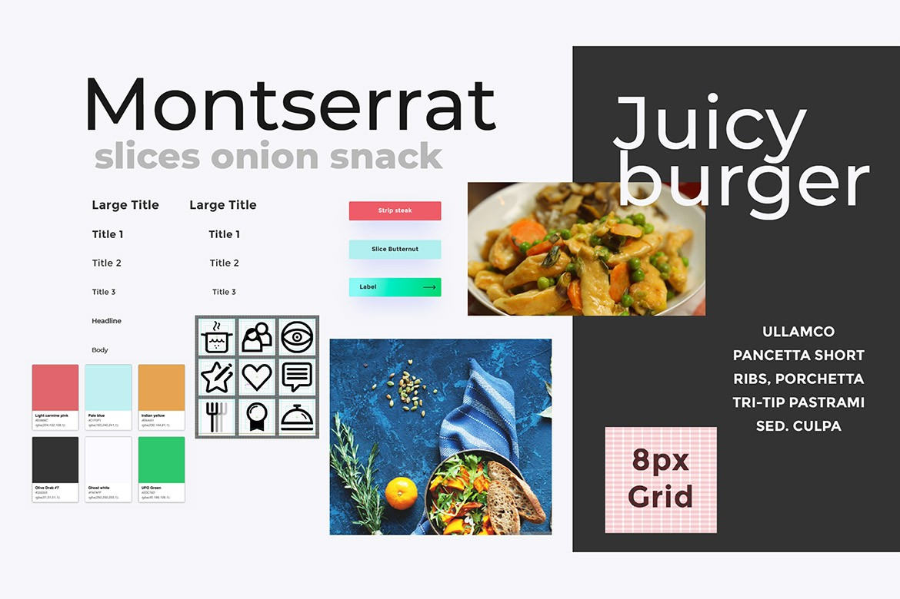</div>

    <h5 class="work-def">Icon grid</h5>
    <div class="">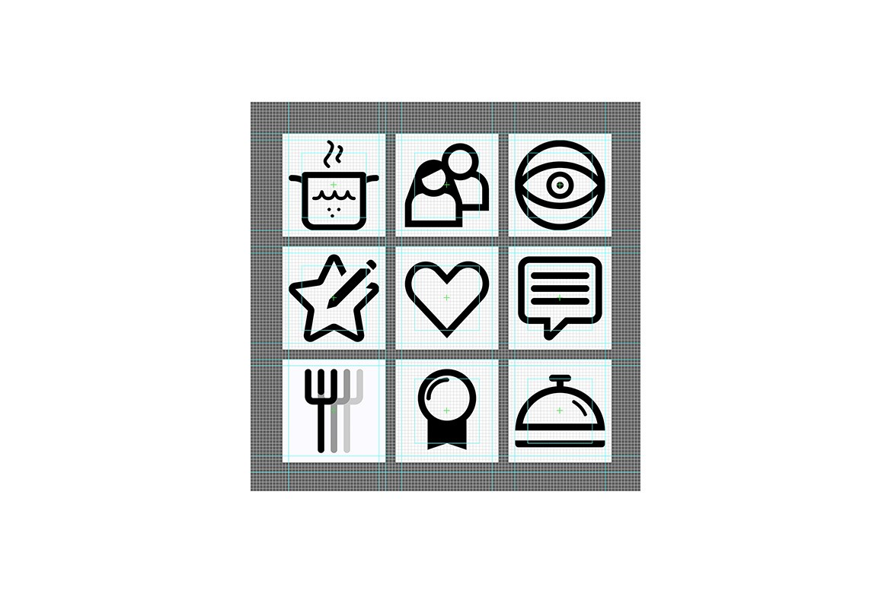</div>

    <h5 class="work-def">Recipe steps screen</h5>
    <div class="">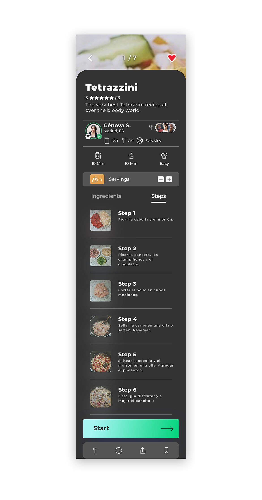</div>

  </div>
</div>
